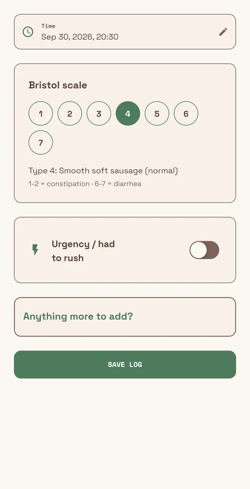
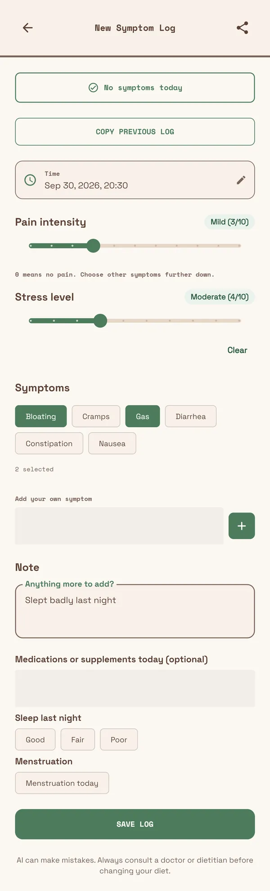

Logging
Done in a couple of minutes
Record how your gut is doing in a few taps. Save a good day with “No symptoms today”, and you can copy your previous log.
- Pain and stress from 0 to 10, symptoms, sleep and medication
- Bathroom visits with the Bristol scale
- Meals, typed in or from a scan